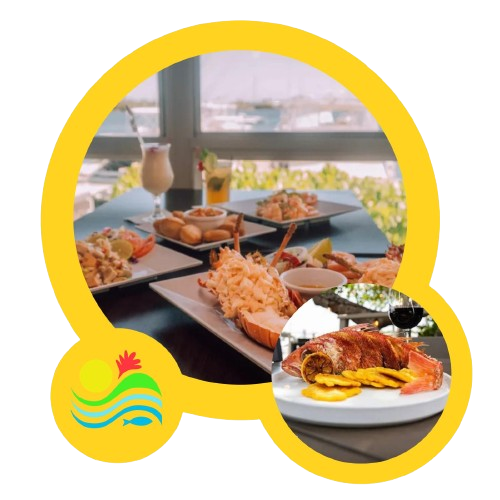

Salinas: Tradición, Sabor y Encanto del Sur
Ubicado a orillas del majestuoso Mar Caribe, Salinas se distingue como uno de los destinos más emblemáticos de la costa sur de Puerto Rico. Este encantador municipio combina a la perfección su rica herencia cultural, paisajes costeros impresionantes y una hospitalidad inigualable, convirtiéndose en el lugar ideal tanto para residentes como para visitantes que buscan vivir una experiencia auténticamente puertorriqueña.
Cultura viva que inspira
La esencia de Salinas se encuentra en su gente y en sus tradiciones. A lo largo del año, el municipio cobra vida con sus coloridas fiestas patronales, festivales gastronómicos y celebraciones navideñas que reflejan el orgullo y la alegría de su comunidad. Cada evento es una invitación a sumergirse en la identidad cultural del pueblo, fortaleciendo sus raíces y atrayendo a quienes desean conocer el verdadero espíritu boricua.
Naturaleza y turismo para disfrutar
Salinas ofrece un escenario perfecto para el descanso y la aventura. Sus tranquilas playas, como Playa Ochenta, y espacios naturales como el Cayo Matías, brindan el ambiente ideal para disfrutar del mar, practicar deportes acuáticos o simplemente relajarse. Su icónico malecón invita a paseos inolvidables con vistas espectaculares, creando momentos únicos en un entorno sereno y acogedor.
La cuna del sabor puertorriqueño
Reconocido como la “Cuna del Mojo Isleño”, Salinas es un paraíso gastronómico. Sus restaurantes, ubicados frente al mar, deleitan a los visitantes con mariscos frescos y platos típicos llenos de sabor. El tradicional mojo isleño, una exquisita salsa que define la cocina local, es símbolo del orgullo culinario del municipio y una experiencia imperdible para todo amante de la buena comida.
Un destino que lo tiene todo
Salinas es mucho más que un lugar para visitar; es un destino para vivirlo. Su mezcla de cultura, tradición, naturaleza y gastronomía lo convierte en un verdadero tesoro del sur de Puerto Rico. Ya sea para una escapada, una aventura o una experiencia culinaria única, Salinas te espera con los brazos abiertos y el sabor de su gente.
UBICADOS:
Salinas se encuentra en la región sur de Puerto Rico. Limita al norte con Aibonito y Cayey, al sur con el Mar Caribe, al este con Guayama y al oeste con Santa Isabel.
